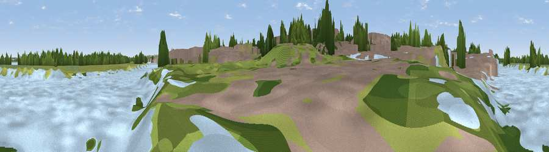

Viewpoint near Ellesmere Port
#44333 in England · top 91% of its area beats it · near Ellesmere PortWhere it is
The exact computed spot (SJ 40726 77171). Click the marker for map links.
The view, rendered

A 360° render of this exact spot computed from the terrain model, tree cover and land cover — summer colours, afternoon light, calibrated against photographs of famous viewpoints. Real trees, hedges and buildings will differ in detail.
The panorama
Grey silhouette: terrain skyline in each direction (720 bearings, Earth curvature and refraction included). Dashed green: skyline with trees (+15 m) and buildings (+8 m) as obstacles. Blue strip: how far the ground is visible on each bearing.
Where the view opens
Wedge length = distance to the farthest visible ground on that bearing (vegetation-aware). Rings at 10, 25 and 50 km.
What fills the view
39% water · 27% grassland · 17% built-up · 12% woodland · 4% wetland · 1% cropland
Angular shares of the visible panorama (visual magnitude), not map area. Landscape diversity 0.63 (0–1 Shannon).
Key numbers
More beautiful places nearby
The staircase of upgrades: each row has a higher view potential than everything closer. Driving times are estimates from straight-line distance, calibrated against real road routing — check an actual route before setting out.
| Place | Direction | Drive | Score |
|---|---|---|---|
| Viewpoint near Ellesmere Port | NW · 2 km | ~5 min | 55.5 |
| Helsby Hill | E · 9 km | ~17 min | 74.6 |
| Viewpoint near Harthill | SSE · 24 km | ~40 min | 80.5 |
| White Brow | NE · 43 km | ~63 min | 82.9 |
| Viewpoint near Halfway House | S · 65 km | ~87 min | 83.3 |
| Viewpoint near Little Wenlock | SSE · 72 km | ~96 min | 84.2 |
| The Wrekin | SSE · 72 km | ~96 min | 85.0 |
| Viewpoint near Little Wenlock | SSE · 73 km | ~96 min | 86.6 |
53.28817, -2.89061 · source: osm viewpoint · position refined by local search. Computed location — check access rights before visiting.